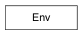

A Singleton class to represent Maya current optionVars and settings
This flag gets the axis set as the world up direction. The valid axis are either ‘y’ or ‘z’.
This flag specifies the axis as the world up direction. The valid axis are either ‘y’ or ‘z’.